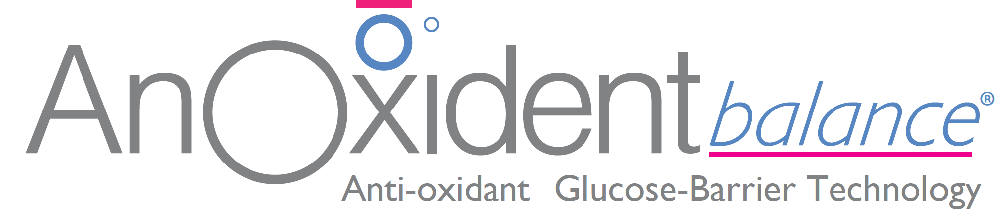

AnOxident balance mutes Gēls
- AnOxident balance® ir īpaši piemērots personām ar diabētu un tiem, kuriem ikdienā patīk našķoties ar saldumiem.
- AnOxident balance® gēls regulē un samazina cukura līmeni siekalās, iznīcina mutē kaitīgās baktērijas un neļauj veidoties zobu aplikumam un kariesam.
- AnOxident balance® gēls ir lielisks palīgs, lai samazinātu sausas mutes veidošanos.
- AnOxident balance® gēlu var lietot arī zem protēzēm.
PĒRC TAGAD
Lietošanas norādījumi
- Ar tīru pirkstu pirms gulētiešanas kārtīgi uzklājiet gēlu uz
augšējās un apakšējās smaganu daļas, mēles, vai zem protēzēm. Ja nepieciešams, var
uzklāt arī nakts laikā. Lai iegūtu maksimālu efektu - neskalot! Lietot pēc
nepieciešamības 24 stundas diennaktī.
Sastāvs
Ksilīts, Nātrija poliakrilāts, poliakrilskābe, piena Olbaltumvielu ekstrakts,
Cucumis Melo, piena substrāts, Lactoferrin- NFQ®, Apo Lactoferrin-NFQ®, Aloe
Barbadensis lapu pulveris.
Brīdinājums par alerģiju
Produkti satur piena daļiņas. Ja nepieciešams, pirms
lietošanas konsultēties ar ārstu.
Galvenās īpašības
- AnOxident balance® ir unikāla un vienīgā produktu līnija mutes veselībai, kas īpaši paredzēta personām ar diabētu un tiem, kuriem ikdienā patīk našķoties ar saldumiem.
- AnOxident balance® sastāv no bioaktīviem augu un piena atvasinājumiem, kas veidoti, lai maksimāli atdarinātu un pastiprinātu mutes dabiskos aizsargmehānismus.
- Sastāvā esošie Lactoferrin-NFQ® un APO Lactoferrin-NFQ®, kas iegūti no nepasterizēta piena, nodrošina augstu pret mikrobu un antioksidantu mijiedarbību.
- Cucumis Melo ir efektīvs superoksīda dismutāzes (SOD) avots, kas iegūts no melones. Pētījumos pierādīts, ka Cucumis Melo ir efektīvs pret iekaisumu un spēcīgs antioksidants.
- Piena olbaltumvielu ekstrakts (MPE ™) regulē mutes pH līmeni un veido barjeru, lai mutē neuzkrātos siekalu glikozes atlikumi.
- DUOX sistēma darbojas kā barjera ūdeņraža peroksīda neitralizēšanai, ko izraisa pārmērīga siekalu glikoze. Ja ūdeņraža peroksīds netiek kontrolēts, tas var izraisīt kaitīgu, skābu perorālo vidi, kas veicina nevēlamu baktēriju uzkrāšanos mutē.
- Ksilīts ir zobiem draudzīgs, nerūgstošs cukura spirts, kas klīniski pierādīts kā vērtīgs papildinājums profilaktiskajā zobārstniecībā.